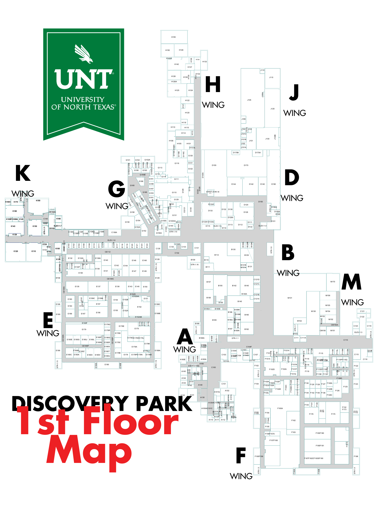
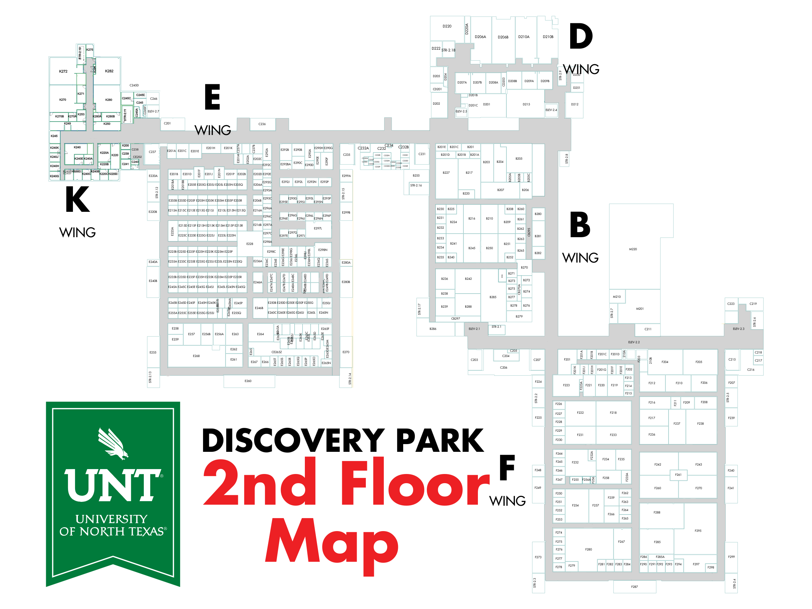

Selected Map
Where I am:
A Wing
B Wing - First Floor
D Wing - First Floor
E Wing - First Floor
F Wing - First Floor
G Wing
H Wing
K Wing - First Floor
M Wing
J Wing
B Wing - Second Floor
D Wing - Second Floor
E Wing - Second Floor
F Wing - Second Floor
K Wing - Second Floor
Where I Want to Go:
Find Route
End Navigation
Logout

